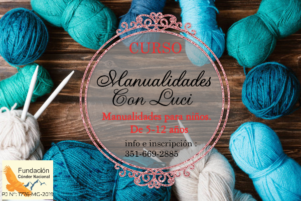
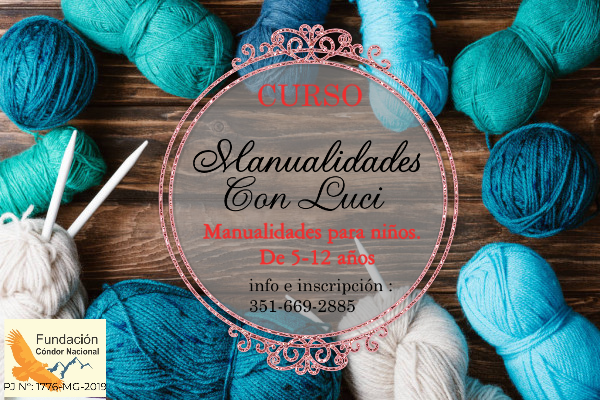

Nuestra Fundación

1Quienes Somos
Somos un equipo transdisciplinario comprometido en generar un cambio de consciencia.
Trabajamos activamente en el desarrollo de nuevas tecnologías en servicio del sector social. Tenemos la convicción que, a través de la tecnología, podemos promover el desarrollo de aprendizaje online . Por lo cual, estamos comprometidos a trabajar en proyectos digitales.
2Nuestros Desafios
Nuestra Fundación se proyecta como un organismo internacional que busca desarrollar e implementar tecnologías innovadoras a través de nuestras áreas de desarrollo tecnológico, educación y salud. Nuestro mayor desafío, es conectar por medio de nuestra red social solidaria, a todas las personas que deseen realizar y especializarse en alguno de nuestros cursos online. Por otra parte, ser partícipes en la educación y formación de jóvenes estudiantes en todas sus etapas de desarrollo.
3Nuestros Objetivos
Nos enfocamos en desarrollar plataformas educativas que lleguen a las personas que más lo necesitan.
Nuestros contenidos apuntan a una educación consciente, que impulse el desarrollo de la sociedad en un ambiente colaborativo y participativo.
Con una amplia salida laboral, horarios flexibles, estudiando en tu hogar. Y a la finalizacion de cada curso,sé le otorgara una certificacion.
Cursos


 



Sedes

Mendoza
Usted podra encontrarnos más especificamente en la localidad de Tunuyán,Mendoza

Santiago Del Estero
Usted podra localizarnos en las localidades de Ojo De Agua y Sumampa.

Córdoba
Podra ubicarnos tambien en nuestra sede en Córdoba capital
Servicios

Consultas Perzonalizadas
Servicio de consultas personalizadas dirigido tanto al alumnado como al profesorado, que permite, de una forma individual, la resolución de dudas concretas relacionadas con la elección de itinerarios formativo

Servicio telefónico
Atendemos tus consultas, resolvemos tus dudas y te acompañamos en tus decisiones. Si nos expones tu situación te daremos nuestra perspectiva y te orientaremos acerca de las posibles alternativas más adecuadas

Via On-line
Algunos centros nos solicitan una intervención en un momento concreto del curso, en consonancia con su programa de orientación al alumnado: el Aula-Móvil, charlas-coloquio, un dossier informativo de alternativas al estudio, un servicio de evaluación del perfil del alumnado.